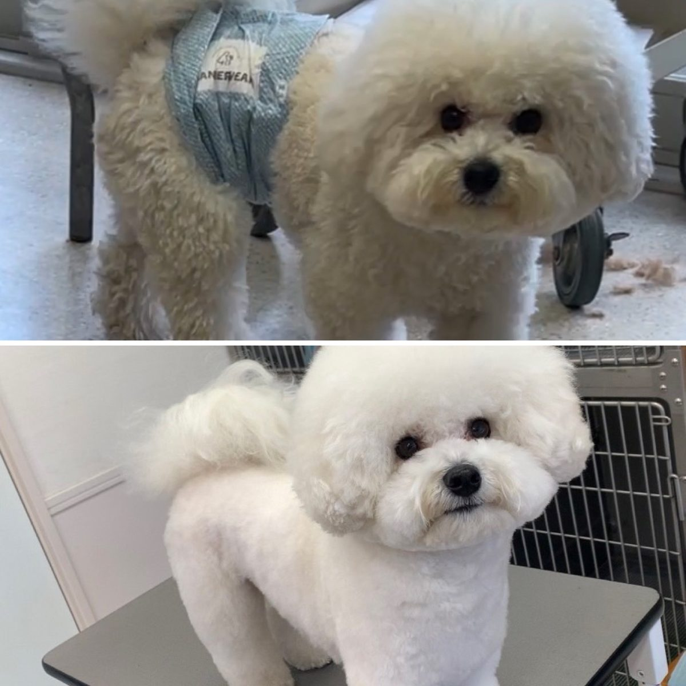
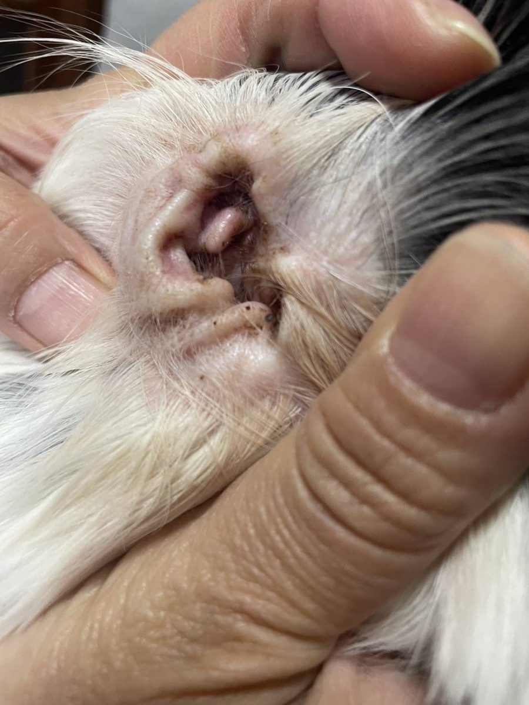
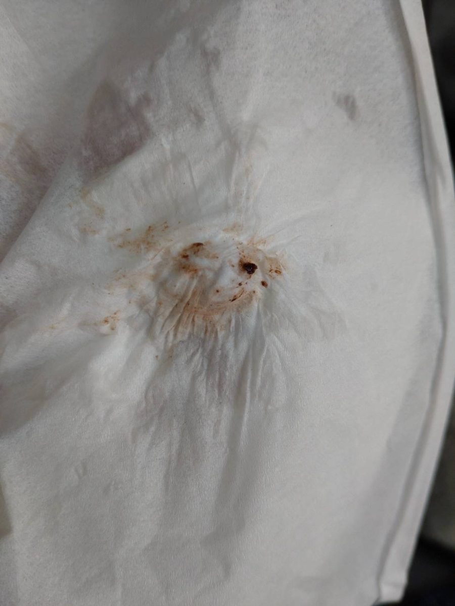
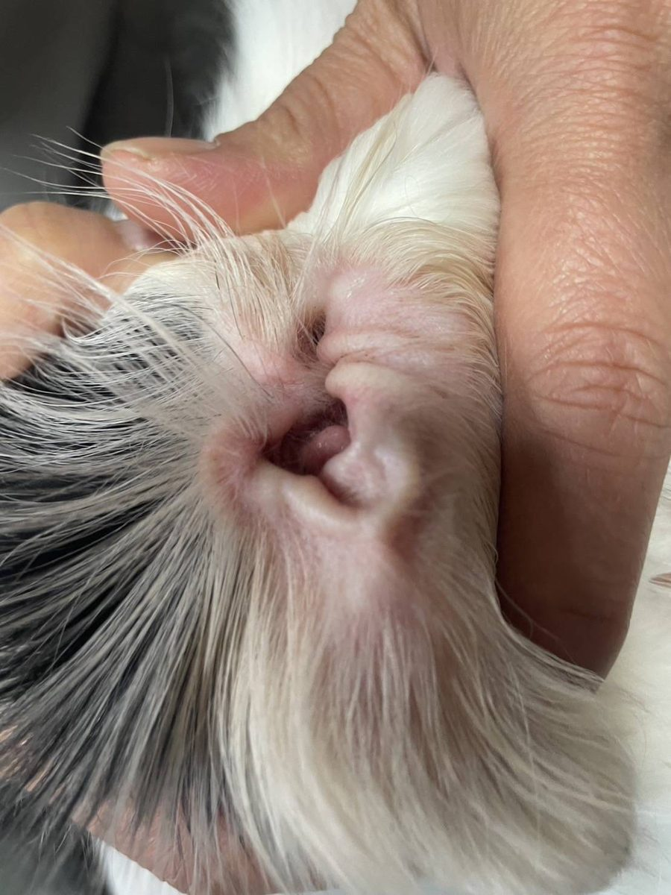
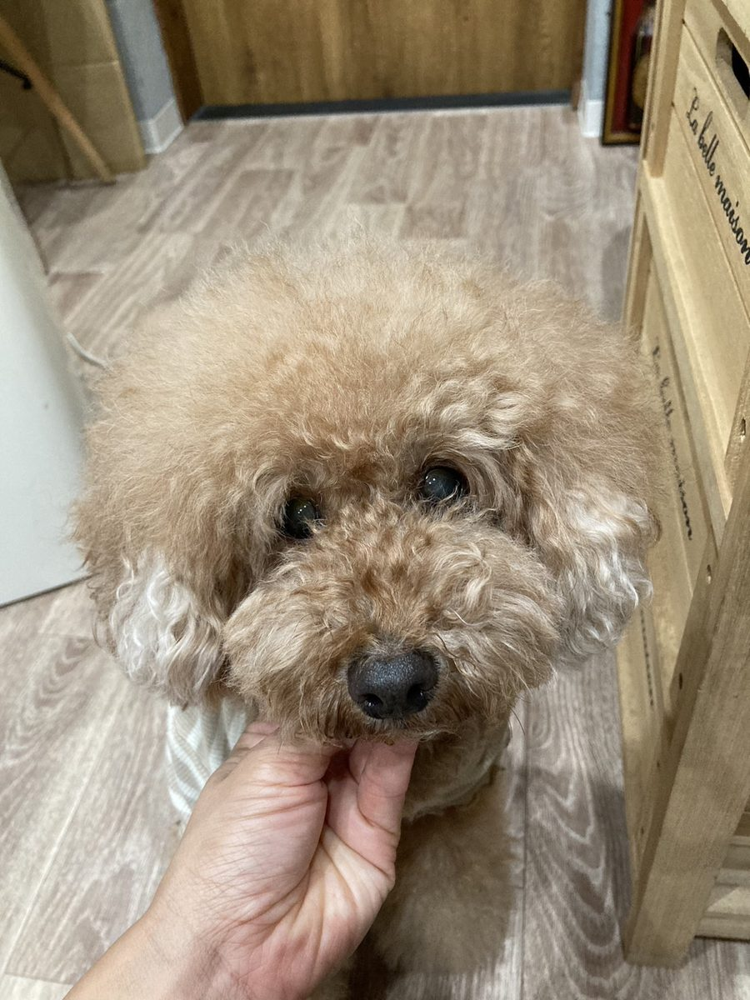
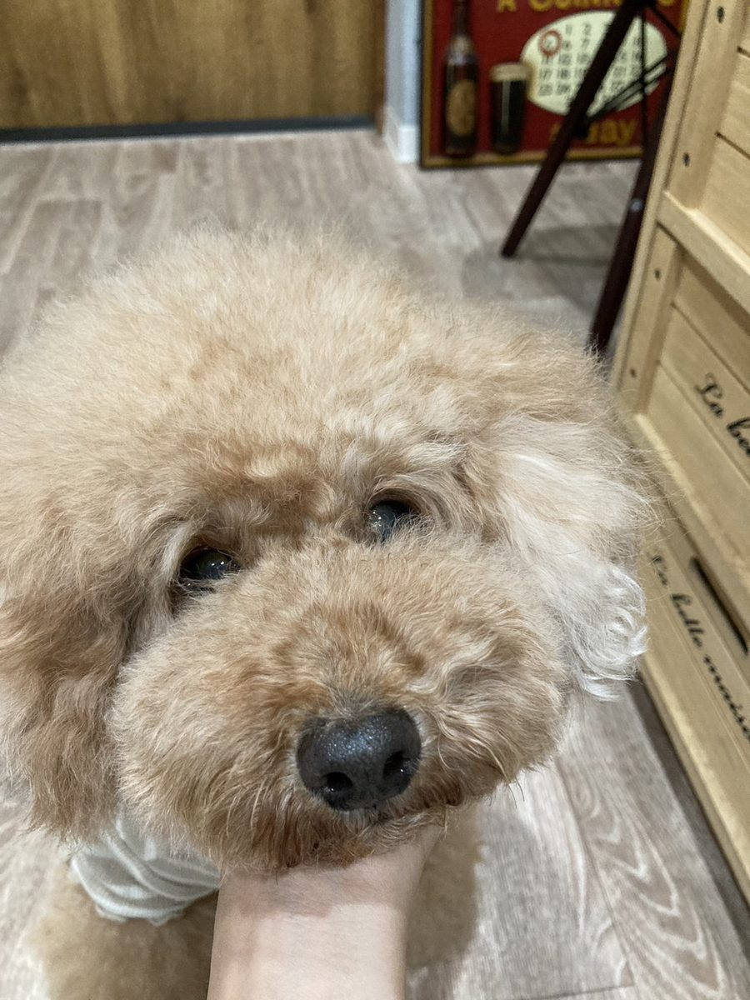

01
りふれシャワーで洗浄
トリミング現場で、りふれシャワーを使用した実際の事例です。


ふわふわが持続していて、たくさん撫でてるのに毛もよれないし、ずっと立ち上がったままで臭いが全くないです!
操作が楽!スイッチがフットスイッチだけというのがGOOD!
トリミング現場でのご利用(りふれシャワー)
トリミングの現場で。シャンプー・洗浄から、毎日のお手入れまで。
りふれシャワーで、トリミング時のシャンプー・洗浄に。操作はフットスイッチ。
りふれウォーターをお耳に入れてから、ティッシュで拭き取るお手入れに。
毛にスプレーしてから、コーミングを。
施術スペースや待合など、ニオイが気になる空間の空間ケアに。
トリミング現場で、りふれシャワーを使用した実際の事例です。

ふわふわが持続していて、たくさん撫でてるのに毛もよれないし、ずっと立ち上がったままで臭いが全くないです!
操作が楽!スイッチがフットスイッチだけというのがGOOD!
トリミング現場でのご利用(りふれシャワー)
垂れ耳のワンちゃんのお耳を、りふれウォーターとティッシュでお掃除した実例です。



短時間でササッと。匂い全く無くて無臭です!
お客様のご利用
ワンちゃんにスプレーしてコーミングした実際の使用例です。写真で仕上がりをご覧いただけます。


使用経過の記録など、ほかの事例は個人様向け:ペットケア・ペット洗浄でご紹介しています。※お客様の声は個人の感想です。
業務でのご利用の価格・導入方法は、個別にご案内します。